Getting Started¶
System Requirements¶
- Windows Vista, 7, 8, or 8.1 (32 or 64-bit)
- LabVIEW 2011 SP1 or later (32 or 64-bit)
- VI Package Manager 2014 or later
Download and Install¶
Downloads for the Toolkit are available at our website: http://www.advancedplotting.com.
The Toolkit is distributed as a standard “VIP” package, installable via the VI Package Manager (VIPM) 2014 or later. VIPM 2014 ships with LabVIEW 2014. If you’re using LabVIEW 2013 or earlier, it’s a free download from JKI’s web site.
Note
VIPM 2014 or later is required. Trying to install the Toolkit with VIPM 2013 or earlier will result in an error message.
Simply double-click the package to start installation. Once complete, the Toolkit will show up under the “Addons” palette on the LabVIEW block diagram.
Examples¶
By far the best way to learn a new toolkit in LabVIEW is to start with examples. In the Examples section, there’s an example VI for nearly every Toolkit VI. You can also download a ZIP file with all the examples.
Getting Help¶
You can also get context help easily on the LabVIEW block diagram. Simply turn on the “Show Context Help” setting in LabVIEW’s Help menu, and hover your cursor over any Toolkit VI.
Complete reference documentation also ships with the Toolkit. You can see a complete set of reference documentation here: VI Reference Documentation. Or from the block diagram, just right-click any VI and select “Help”:
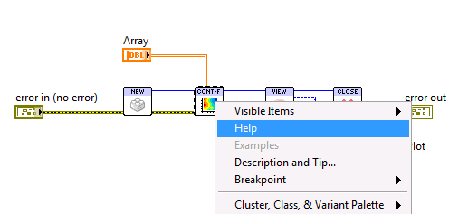Direct contact information can also be found on our website, at http://www.advancedplotting.com.
Making Plots¶
The central object in the Toolkit universe is the plot. A plot isn’t limited to a single kind of data, like a bar or scatter graph. Rather, it’s a canvas on which you can combine all kinds of objects: contours, tiles, lines, bars, points, text, mathematical symbols, legends, colorbars...
Like many kinds of data in LabVIEW, plots are resources that you have to open and close. First, use New Plot ID to create a new Plot Identifier, or Plot ID. Then supply that Plot ID to the various Toolkit VIs, along with your data. Each one will add content to your plot. When finished, remember to close the plot with Close Plot ID. Here’s a simple example which creates a new plot and draws a series of filled contours:
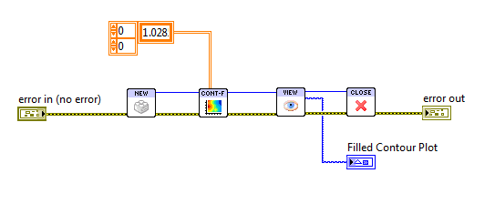The result:
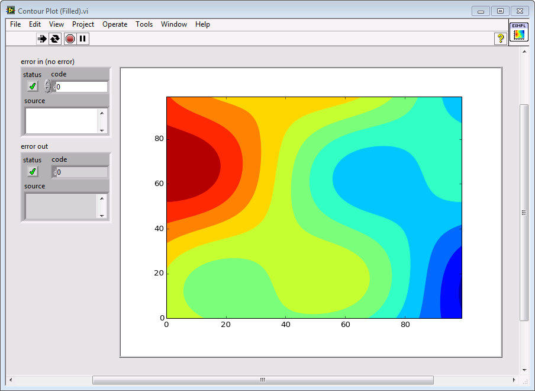You’ll notice there are error terminals for Close Plot ID. This VI follows the behavior used in other LabVIEW cleanup VIs... although it propagates errors from input to output, the plot will still be closed if there’s an error on the “error in” terminal. Also, if you supply an invalid or already-closed Plot ID to Close Plot ID, it will simply be ignored.
The Plot ID is an opaque identifier for a reason. Plots aren’t handled as LabVIEW controls or bitmapped graphics. Rather, they are stored as objects in memory using vector graphics. Among other things, that means they can be reshaped and resized at any time with no loss of quality.
Combining Multiple Features¶
Remember, a plot is a canvas to which you can add anything you want. To add multiple features to a plot, just call multiple Toolkit VIs, and their output will be combined to make the final result.
For example, let’s add contour lines to our original plot, along with a colorbar, and set a title:
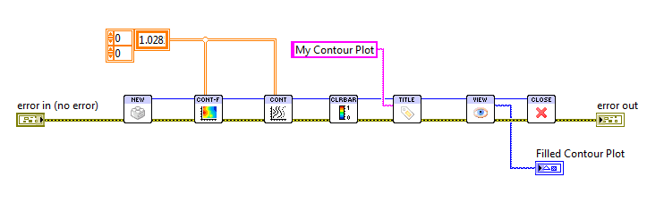The result:
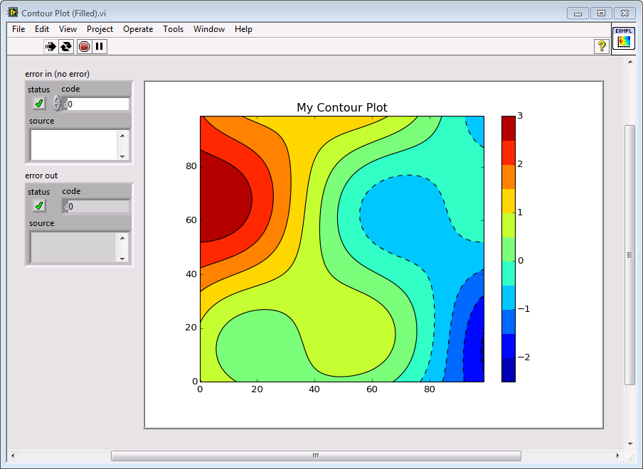Viewing Plots¶
Since there’s no LabVIEW control, how do you view a plot? There are a couple of ways, but the easiest is to render it to a LabVIEW picture. This is the approach used in the example above. Simply use the View Plot As Picture Toolkit VI, and create a Picture indicator on the front panel. That’s the control used in the above examples.
Plots have a default size of 640 pixels wide by 480 pixels tall. That might not exactly match your Picture indicator, though. So the Toolkit provides an optional Ref for Sizing input to View Plot As Picture. Just create a reference to your Picture and supply it to the VI. The plot will be rendered at exactly the required size to fit the control.
Let’s add that reference to the block diagram, and then scrunch the Picture indicator down and see what happens:
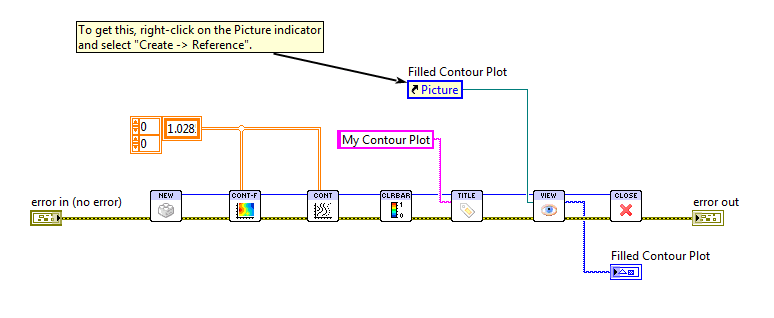The result:
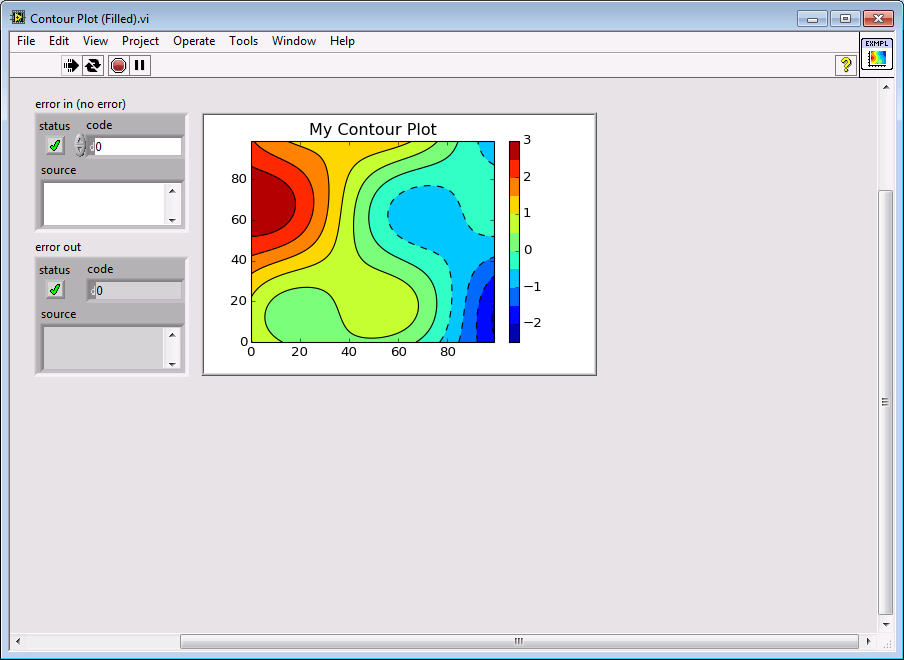Resizing Plots¶
Keep in mind that this kind of resizing is non-destructive, since the Toolkit uses vector graphics internally. Your plot won’t become blurry or corrupted.
You don’t need a Picture control around to set the size of a plot. Instead, simply use Set Plot Size and specify the size you want in pixels. This is especially handy when saving to disk. Speaking of which...
Saving Plots¶
The great thing about the Toolkit is that you can create production quality output directly from the block diagram. Use Save Plot To Disk to save your plots in any of half a dozen formats.
The output format is determined by the file extension. Here, we modify our example by replacing View Plot As Picture with Save Plot To Disk:
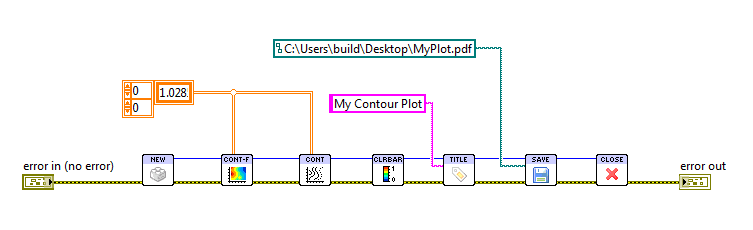Let’s open that in Adobe Reader to see how it came out:
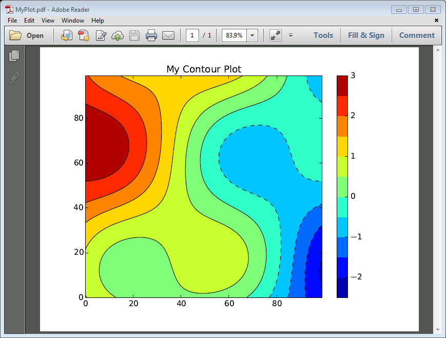Using Property Clusters¶
The Toolkit VIs have lots of options, but using lots of terminals in LabVIEW can be a pain. To address this, all the Toolkit VIs use the “standard” terminal pattern, with one terminal reserved for the property cluster. This is a cluster with options specific to the plotting VI.
For example, let’s modify the example above to use the Hot and Cold colormap as opposed to the default Rainbow colormap:
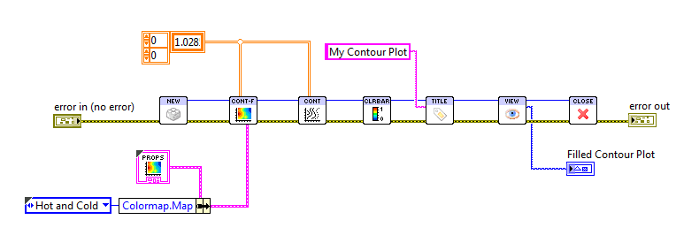Property clusters are just data, and you can handle them the way you would any other cluster in LabVIEW. For simplicity and readability, we recommend the approach shown above, using a cluster constant with the default values combined with Bundle By Name. This makes it clear what option you’re setting.
You can get a cluster constant by right-clicking the Properties terminal of the VI, but an even easier way is through the Properties subpalette. This guarantees that your constant will have the right default values:
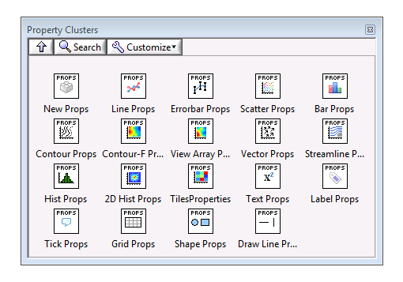Other Useful Hints¶
Plot sizes are always given in pixels, because that’s what you need to interact with Picture controls and when saving to disk. But fonts, line widths, marker sizes, and other elements are specified in typographical points (1/72 inch). To go back and forth, in addition to a height and width each plot has a DPI or dots per inch setting. This controls, for example, how many pixels tall a text label is in 12-point font. You can adjust the plot’s DPI using the Set Plot Size Toolkit VI.
The Toolkit uses a special control for colors as well, although the values are nearly 100% compatible with the built-in LabVIEW color boxes. Read more about it in Using Color.
You can use a wide variety of mathematical symbols in your plots. They can appear in axis labels, text manually added, tick marks; generally wherever text can appear. Using Inline Text Markup has a complete guide.
And, for all plots dealing with “1D” data, you can plot on polar axes! See Making Polar Plots for details.
Where To Go Next¶
You can find a complete list of the Toolkit VIs here: VI Reference Documentation. It’s organized by functionality, into:
- Core VIs, meaning New Plot ID, Close Plot ID, etc.
- 1D Plotting VIs, meaning line, scatter, bar plots; anything that takes a 1D array as input
- 2D Plotting VIs, meaning contour, vector arrow, streamline, 2D histogram, tile plots... anything that takes a 2D array or arrays as input
- Annotation VIs, meaning VIs that add text, a colorbar, a legend, etc.
- Plot Config VIs, meaning those that adjust a plot’s size, etc.